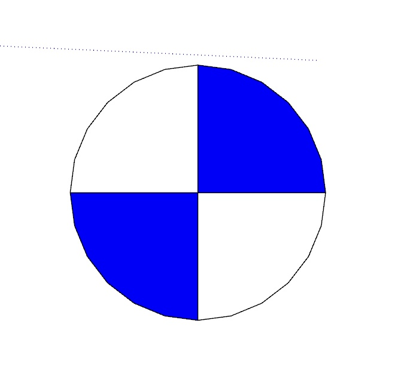
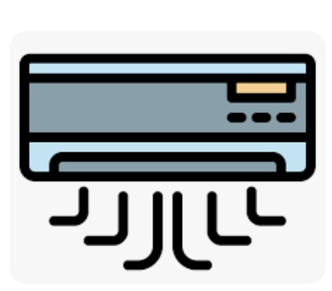

1. ภาพรวมระบบ (System Overview)
ขอบเขตงานวิศวกรรมระบบไฟฟ้า สื่อสาร และเครื่องปรับอากาศโมดูลาร์
ระบบ Electricity (EE) ใน QHeim ทำหน้าที่บริหารจัดการระบบวิศวกรรมไฟฟ้า สื่อสาร และปรับอากาศ สำหรับบ้านโครงสร้างเหล็กสำเร็จรูปโมดูลาร์ (Modular Unit) โดยมีความซับซ้อนกว่าอาคารทั่วไปเนื่องจากสายไฟและท่อร้อยสาย ไม่สามารถวิ่งตัดผ่านโครงสร้างได้อย่างอิสระ แต่จะต้องวิ่งผ่านช่องทางเดินสายเฉพาะ (Service Cavities, Beam Holes, Corridors, Ceiling Plenums) และช่องเปิดแนวดิ่ง (Vertical Shafts) ระหว่างยูนิตกล่องโมดูลาร์
💡 แสงสว่างและกำลัง (Lighting & Power)
คำนวณแนวเดินสายสวิตช์ 1-3 ทาง, เต้ารับไฟฟ้าภายใน-ภายนอกอาคาร, สายเมนเชื่อมตู้ควบคุมหลัก (Load Center)
❄️ ปรับอากาศ (Air Conditioning)
จับคู่วงจร CDU ภายนอก และ FCU ภายในจากตารางโหลด CAD, เดินสายเมนกำลัง และสายควบคุม 1-3 ข้ามยูนิต
📡 สายสื่อสาร (COMMU & Security)
เดินสาย LAN Cat.6, TV RG6, TEL, กันขโมย (SEC), กริ่ง Aiphone, และกล้อง CCTV ผ่านรูเจาะ 332mm และช่องชาร์ป
📊 แบบและยอดวัสดุ (Shop Drawing & BOM)
สร้าง Single-line Loop Diagram, จัดทำ Scene 2D Plan, ส่งออก Trimble LayOut A3 (1:70), และยอดวัสดุ Excel/CSV
ข้อกำหนดสำคัญที่สุดก่อนเริ่มระบบ EE (Prerequisites & Critical Rules):
- ในโมเดล SketchUp ต้องมีการตั้งชื่อยูนิตและกำหนดเลเยอร์
S-Unitให้เรียบร้อยจากระบบนำเข้า CAD AR - ก่อนเดินสายสัญญาณหรือท่อใดๆ ต้องรันปุ่ม Shaft และปุ่ม Floor Area เป็นลำดับแรกเสมอ เพื่อให้ระบบลงทะเบียนพิกัดกริดยูนิต
ix-iyและทราบตำแหน่งช่องชาร์ป มิฉะนั้นอัลกอริทึมค้นหาเส้นทางจะไม่สามารถคำนวณแนวการเจาะข้ามยูนิตได้ - ห้ามขยับหรือหมุนตำแหน่ง Unit หลังจากรัน Floor Area แล้ว หากมีการแก้ไขต้องรัน Floor Area ซ้ำใหม่
แผนผังลำดับขั้นตอนการทำงาน (Workflow Lifecycle)
flowchart TD
A["1. จัดวาง Layout Unit (S-Unit) & Unit Position"] --> B["2. รัน Shaft (Heim_Shaft)
สร้าง Component shaftbox ในช่องชาร์ปแนวดิ่ง"]
B --> C["3. รัน Floor Area (Heim_FloorArea)
ระบุชั้น fl1-fl3, พิกัดยูนิต ix-iy, แมป IM Code"]
C --> D{"เลือกสายงานประมวลผล EE"}
D --> E["สายงาน A: CAD Text & Load Schedule"]
E --> E1["Name CDU+FCU -> Name Equip -> Lighting BOX -> Check Text"]
D --> F["สายงาน B: แสงสว่างและเต้ารับ EE1"]
F --> F1["WireGroup (ตัดหลบ 10mm) -> Zone -> Main Wire -> Lighting SW -> Plug Wire -> Color"]
D --> G["สายงาน C: เครื่องปรับอากาศ & กำลัง EE AC"]
G --> G1["Main AC (LC ไป CDU) -> Control 1-3 (CDU ไป FCU) -> Equip 1-3 (น้ำอุ่น/ฮูด) -> AirFac"]
D --> H["สายงาน D: สายสื่อสาร COMMU"]
H --> H1["Routing Walkway (เจาะรู 332mm & Shaft) -> Auto Routing LAN, TV, TEL, SEC, CCTV, AIPH"]
E1 --> I["ตรวจสอบ & สรุปผล"]
F1 --> I
G1 --> I
H1 --> I
I --> J1["Single-line Diagram:
Heim_MainLoop"]
I --> J2["Scenes 2D Top-View:
Heim_EE_Scene"]
I --> J3["ส่งออก Trimble LayOut:
Heim_EE_Layout (SKU.layout)"]
I --> J4["ส่งออก BOM สรุปวัสดุ:
Job Order / Recheck / File Upload.csv"]
2. หน้าต่างเมนูควบคุม (UI Controllers & Dialogs)
แถบเครื่องมือหลักและไดอะล็อกคำสั่งในโมดูล EE
Heim_ElectricityIcon.rb
Heim_Electricity.html
C:/QHeim/Ruby/EE/
2.1 รายการไอคอนบนแถบเมนูหลัก (Main Toolbar)
| ไอคอน | ชื่อคำสั่ง (Tool Title) | Action / Dialog | ไฟล์ประมวลผลหลัก | หน้าที่หลัก |
|---|---|---|---|---|
| EE EQPM(Text) | Dialog Electrical AC | Heim_EEText.html | เมนูนำเข้าและจับคู่วงจรโหลด CDU, FCU, Bair, Lighting Box จากตาราง CAD | |
| Floor Area | Dialog Floor | Heim_FloorArea.rb | กำหนดชั้น (fl1-fl3), คำนวณพิกัดยูนิต ix-iy, จัดกลุ่มผนัง และแมป IM จาก Excel |
|
 |
Shaft | ประมวลผลทันที | Heim_Shaft.rb | ตรวจหาช่องชาร์ปจาก A-DETL แล้ววาง shaftbox พร้อมบันทึกมุม 0-3 |
| Wiring (COMMU) | Dialog Wiring EE3 | Heim_EE_UnitPos.rb | ประมวลผลเดินสายสื่อสาร LAN, TV, TEL, SEC, CCTV, AIPH และคำนวณ BOM Com | |
 |
Air | Dialog EE AC | Heim_EE_AirIcon.rb | เมนูจัดการระบบแอร์: สายเมนแอร์, สายควบคุม 1-3, สายอุปกรณ์กำลัง, และ BOM AC |
| Light | Dialog EE1 | Heim_EE_LightIcon.rb | เมนูระบบไฟส่องสว่าง: WireGroup, Zone, สายเมน LC, สวิตช์ 1-3, ปลั๊ก, แยกสี, BOM | |
| Layout | Dialog Layout EE | Heim_EE_LayoutIcon.rb | สร้าง Single-line Loop Diagram, จัด Scene 2D, และส่งออก Trimble LayOut A3 |
2.2 เมนูย่อย EE EQPM Text (Heim_EEText.html)
| ปุ่มคำสั่ง | สคริปต์ | หน้าที่ |
|---|---|---|
| Name CDU+FCU | Heim_EE_Name_AC.rb | อ่าน EELoadLC*.txt แมป CDU/FCU สร้าง 3D Text |
| Name Equip+AC BOX | Heim_EE_Name_Equip.rb | วางกล่อง Bair และ 3D Text อุปกรณ์กำลัง |
| Lighting BOX | Heim_EE_Load_TextLight.rb | วางกล่องต่อสายไฟส่องสว่างประจำวงจร |
| Check Text | Heim_EE_Name_CheckText.rb | เช็คความถูกต้องระหว่าง Text ในแปลนกับตู้โหลด |
2.3 เมนูย่อย EE AC Wiring (Heim_EE_AirIcon.html)
| เมนู | สคริปต์ | หน้าที่ |
|---|---|---|
| Main | Heim_EE_UnitPosAC.rb | เดินสายเมนแอร์ MAIN AC1..3 (LC ไป CDU) |
| Control 1-3 | Heim_EE_AC_Control.rb | เดินสายควบคุม CDU ไปยัง FCU ชั้น 1-3 |
| Equip 1-3 | Heim_EE_UnitPosAC2.rb | เดินสายเครื่องทำน้ำอุ่น/เตาไฟฟ้า/ปั๊มน้ำ |
| QuanAC / Equip | Heim_EE_QuanAC.rb | สรุป BOM แอร์และอุปกรณ์กำลังสู่ Excel |
2.4 เมนูย่อย EE Light / EE1 (Heim_EE_LightIcon.html)
| เมนู | สคริปต์ | หน้าที่ |
|---|---|---|
| WireGroup | Heim_EE_WireGroup.rb | คลีนเส้น CAD ตัดหลบโคมไฟ 10 mm และรวม Group |
| Zone | Heim_EE_Zone.rb | คลิกผิวพื้น (Face) กำหนดขอบเขตตู้ LC |
| Main / Lighting | Heim_EE_MainWire / LightSW | เดินสายเมน MAIN-LC และสายสวิตช์ 1-3 ทาง |
| Plug / Color | Heim_EE_PlugWire / WireColor | เดินสายเต้ารับ PLUG และมาร์กเกอร์สีคู่สาย |
2.5 เมนูย่อย Layout EE (Heim_EE_Layout.html)
| เมนู | สคริปต์ | หน้าที่ |
|---|---|---|
| MainWire | Heim_MainLoop.rb | วาดผังเส้นวงจร Single-line Loop Diagram |
| Scene | Heim_EE_Scene.rb | ตั้งกล้อง 2D Top-View สร้างแท็บ FL1, FL2, FL3 |
| Layout | Heim_EE_Layout.rb | โคลน New-A3.layout วาง Viewport สเกล 1:70 |
| Color | Heim_WireColor.rb | ไฮไลต์สีเส้นสายไฟและอุปกรณ์ตามกลุ่มควบคุม |
3. คู่มือขั้นตอนการปฏิบัติงานสำหรับคนทำงาน (SOP Operator Guide)
ลำดับ 6 สเต็ปมาตรฐาน และคู่มือการคลิกใช้งานแต่ละปุ่มอย่างละเอียด
Setup ฐานรากและโครงสร้าง
ตรวจสอบชื่อยูนิตใน S-Unit → กดปุ่ม Shaft วางท่อชาร์ป → กดปุ่ม Floor Area ครอบโมเดลเลือกชั้น fl1/fl2/fl3
ผูกข้อมูลวงจร CAD เข้ากับอุปกรณ์ (EE EQPM Text)
กดปุ่ม EE EQPM(Text) → รัน Name CDU+FCU → รัน Name Equip → รัน Lighting BOX → รัน Check Text
เดินสายระบบไฟส่องสว่างและเต้ารับ (Light / EE1)
เปิดเมนู Light → รัน WireGroup → รัน Zone (คลิกผิว Face พื้น) → รัน Main → รัน Lighting (1-3SW) → รัน Plug
เดินสายระบบปรับอากาศและอุปกรณ์กำลัง (Air / EE AC)
เปิดเมนู Air → รัน Main (LC ไปยัง CDU) → รัน Control 1..3 (CDU ไปยัง FCU) → รัน Equip 1..3 (น้ำอุ่น/เตา)
เดินสายระบบสื่อสารและรักษาความปลอดภัย (Wiring COMMU)
เปิดเมนู Wiring (COMMU) → เลือกรหัสชั้น fl1/fl2/fl3 → ระบบเจาะรู 332mm เดินสาย LAN, TV, TEL, CCTV, AIPH อัตโนมัติ
สร้างแบบ 2D LayOut และส่งออกรายการวัสดุ (BOM)
เปิด Layout → รัน MainWire (Single-line) → รัน Scene → รัน Layout สร้าง SKU.layout → กดปุ่ม Quan ส่งออก Excel/CSV
📋 คำแนะนำการกดใช้งานทีละคำสั่ง (Step-by-Step Details)
การเลือกวัตถุ: ไม่ต้องเลือกวัตถุในโมเดลล่วงหน้า (สคริปต์สแกนโมเดลอัตโนมัติ)
การกด: กดไอคอน Shaft (รูปท่อชาร์ป)
ผลลัพธ์: ค้นหาคอมโพเนนต์ชาร์ปใน A-DETL → วาง shaftbox.skp ลง Layer EE-Shaft → บันทึก Attribute [s0, s1, s2, s3] ลง Unit → ขึ้นข้อความ "Insert Main Shaft EE"
การเลือกวัตถุ: ลากเมาส์ครอบวัตถุทั้งหมดของชั้นที่กำลังทำ (Unit, ผนัง, ประตู, อุปกรณ์ไฟฟ้า)
การกด: กดไอคอน Floor Area → เลือกชั้นใน Popup (fl1, fl2, fl3)
ผลลัพธ์: จัดกลุ่มผนังเป็น wallgroup.flX ใน A-WLL → บันทึกพิกัดกริด ix-iy (เช่น 1-1, 2-1) ให้ทุกยูนิต → แมปรหัส IM จาก Excel ให้กับอุปกรณ์ทั้งหมด
การเตรียมการ: ตรวจสอบว่ามีไฟล์ C:/QHeim/DATA/EELoadLC*.txt จากการส่งออก CAD เรียบร้อย
การกด: กด EE EQPM(Text) → กด Name CDU+FCU → กด Name Equip+AC BOX → กด Lighting BOX → กด Check Text
ผลลัพธ์: สร้าง 3D Text ประจำวงจรและวางกล่องต่อสาย Bair และ Lighting Box ในตำแหน่งที่ถูกต้อง
- WireGroup: เลือกเส้น CAD → เลือก
WireGroup→ ระบุชั้น → ระบบตัดปลายเส้นหลบขอบโคมไฟ 10 mm - Zone: เลือก
Zone→ ระบุตู้ LC → คลิกเมาส์บนผิวพื้น (Face) ของโซนนั้นเพื่อผูกอุปกรณ์ทั้งหมดในห้องเข้ากับตู้ LC - Main: เลือก
Main→ เลือกรหัสชั้น → ลากสายเมนสีน้ำเงินMAIN-LCจากตู้ LC สู่กล่องต่อสาย - Lighting: เลือกสวิตช์ (
1SW,2SW,3SW) → ระบบลากสายสวิตช์ไปยังดวงโคม - Plug: เลือกรหัสชั้น → ระบบเดินสายเต้ารับสีเขียว
PLUGสู่เต้ารับทุกจุด - Color: ไฮไลต์คู่สีสวิตช์และดวงโคมให้ตรงกัน
รัน Main (เดินสายเมนสีบานเย็น MAIN AC จาก LC ไป CDU BOX) → รัน Control 1, 2, 3 (เดินสายควบคุมสีฟ้า CONTROL AC จาก CDU สู่ FCU ตามชั้น) → รัน Equip 1, 2, 3 (เดินสายเครื่องทำน้ำอุ่น/เตา)
กดไอคอน Wiring (COMMU) → เลือกชั้น fl1/fl2/fl3 → ระบบคำนวณ Pathfinding เจาะผ่านผนังและรูรอยต่อยูนิต 332mm เดินสาย LAN (Cat.C), TV (Cat.D), TEL (Cat.E), SEC, AIPH, และ CCTV เข้าสู่ตู้เราเตอร์หลัก
เปิด Layout → กด MainWire (วาด Single-line Loop Diagram) → กด Scene (จัดกล้อง 2D สร้างแท็บ FL1..3) → กด Layout (โคลนเทมเพลตวาง Viewport สเกล 1:70 ลง A3)
กดปุ่ม Quan (QuanAC / QuanCom / QuanLTG) → เลือกยี่ห้อ (Panasonic/Schneider) → เลือกรุปแบบ (Job Order / Recheck / File Upload.csv)
4. สถาปัตยกรรมและตรรกะการทำงานเชิงลึก (Detailed Module Logic)
อัลกอริทึมค้นหาเส้นทาง Manhattan, การวิเคราะห์ขอบเขตยูนิต และ Raycast
4.1 อัลกอริทึมการค้นหาเส้นทางเดินสายอัตโนมัติ (findwalkway.rb & ClassEE.rb)
หัวใจสำคัญที่สุดของระบบ EE คือการคำนวณเส้นทางเดินสายข้ามยูนิตโมดูลาร์โดยอัตโนมัติผ่าน 3 ขั้นตอนหลัก:
-
การวิเคราะห์ขอบเขตยูนิต ($dcposborder): ตรวจสอบว่าขอบด้านใดของยูนิตเปิดออกสู่ภายนอก หรือติดกับเพื่อนบ้าน โดยอ้างอิงตารางทิศทาง 01-12:
$dcposborder = { "01"=>["T","L","R"], "02"=>["L","R"], "03"=>["L","R","B"], "04"=>["T","L"], "05"=>["L"], "06"=>["L","B"], "07"=>["T"], "08"=>[], "09"=>["B"], "10"=>["T","R"], "11"=>["R"], "12"=>["R","B"] } # T = Top, B = Bottom, L = Left, R = Right -
ตำแหน่งรูเจาะบริการที่มุมยูนิต ($P_{corner}$ ที่ระยะ Offset 332 mm):
$$P_{corner} = P_{center} \pm \left( rac{ ext{Width}}{2} - 332\, ext{mm},\, rac{ ext{Height}}{2} - 332\, ext{mm},\, 0 ight)$$ระบบสร้างจุดผ่าน \(pc_0, pc_1, pc_2, pc_3\) เพื่อใช้เป็นโหนดหลักในการเปลี่ยนทิศทางสายไฟ
-
ตรรกะการหาเส้นทางแบบ Manhattan Route (makeroute): ตรวจสอบแนวแกน X และ Y ผ่านฟังก์ชัน
throughx/throughyหากติดสิ่งกีดขวาง จะเลี้ยวเข้า Walkway แนวขนาน พร้อมยิง Raycast ตรวจสอบการชนช่องชาร์ป (rayShaft2/rayShaft3) ป้องกันสายไฟพาดลอย
4.2 โมดูลตำแหน่งชั้นและช่องชาร์ป (Heim_FloorArea.rb & Heim_Shaft.rb)
- Heim_Shaft.rb: สแกนหาวัตถุใน
A-DETLกว้าง/ยาว > 150 mm แล้ววางshaftbox.skpลงEE-Shaftพร้อมบันทึกมุม[s0, s1, s2, s3] - Heim_FloorArea.rb: จัดเรียงพิกัดศูนย์กลางยูนิต กำหนดรหัสตำแหน่งแบบพิกัดฉาก
Unit Pos = ix-iy(เช่น1-1,2-1) พร้อมเชื่อมโยงชีต ExcelCOMMU C D E,COMMU AIPH,CCTV,SECเพื่อแมปรหัส IM อัตโนมัติ
4.3 การสร้างแบบ LayOut อัตโนมัติ (Heim_EE_Layout.rb)
ระบบทำงานร่วมกับ SketchUp LayOut Ruby API (Layout::Document.open) โดยคัดลอกไฟล์ต้นแบบ New-A3.layout ไปยังโฟลเดอร์โครงการ แล้วนำ Scene 2D Top-View แต่ละชั้นมาจัดวางลงกระดาษ A3 ด้วยอัตราส่วนมาตราส่วนมาตรฐาน Scale = 1:70 โดยอัตโนมัติ ทำให้ได้แบบ Shop Drawing ที่พร้อมพิมพ์หรือแก้ไขต่อได้ทันที
5. ตารางสรุปเลเยอร์, แมตทีเรียล และคอมโพเนนต์ (EE Matrix)
มาตรฐานเลเยอร์ โค้ดสี และพจนานุกรม Attribute ประจำระบบ EE
5.1 โครงสร้างโฟลเดอร์เลเยอร์และสายไฟ (Layer & Folder Hierarchy)
| Folder | Layer Name | สี / Material | หน้าที่และการใช้งาน |
|---|---|---|---|
| WIRE-COMMU | LAN(C) | ดำ | สายสัญญาณคอมพิวเตอร์ LAN Cat.6 (Mat: twotwenty) |
| TV(D) | ดำ | สายสัญญาณโทรทัศน์ Coaxial RG6 (Mat: matD) | |
| TEL(E) | ดำ | สายสัญญาณโทรศัพท์ (Mat: matE) | |
| SEC | ดำ | สายสัญญาณกันขโมยและเตือนภัย (Mat: matSEC) | |
| AIPH | ดำ | สายอินเตอร์คอมและกริ่งวิดีโอ Aiphone | |
| CCTV | ดำ | สายกล้องวงจรปิด (Mat: matCCTV) | |
| WIRE-AC | MAIN AC1..3 | บานเย็น | สายไฟเมนกำลังจ่ายเครื่องปรับอากาศ ชั้น 1-3 |
| CONTROL AC1..3 | น้ำเงิน | สายสัญญาณควบคุม CDU ไปยัง FCU ชั้น 1-3 | |
| WIRE-LTG&REC | MAIN-LC | น้ำเงิน | สายเมนตู้ Load Center สู่กล่องต่อสาย |
| PLUG | เขียว | สายไฟวงจรเต้ารับ ปลั๊กไฟทั่วไป | |
| SW1WAY..3WAYS | ตามสีวงจร | สายไฟสวิตช์ควบคุมดวงโคม 1-3 ทาง | |
| WireColor | ตามมาร์กเกอร์ | มาร์กเกอร์สีประจำวงจรย่อยเพื่อแยกกลุ่มควบคุม |
5.2 โครงสร้างพจนานุกรม Attribute (SketchUp Attribute Dictionary)
| Entity Target | Dictionary Name | Key | Type | ตัวอย่างค่า & ความหมาย |
|---|---|---|---|---|
| Unit (S-Unit) | "Unit" | "FL" | String | "fl1", "fl2", "fl3" (ระบุชั้น) |
| "Unit" | "Pos" | String | "1-1", "2-3" (พิกัดกริดยูนิต) | |
| "Unit" | "Shaft" | Array | [1, 0, 0, 1] (มุมที่มีชาร์ป 0 ถึง 3) | |
| อุปกรณ์ (EE-EQPM-*) | "Com" | "Floor" / "IM" | String | "fl1", "IM_APA_001" (รหัสวัสดุโรงงาน) |
| "Com" | "Unit" | Array | [UnitName, pc0, pc1, pc2, pc3, center, pos] | |
| "REC"/"BOX" | "ZONE" | String | "LC1" (โซนตู้ควบคุมที่สังกัด) | |
| ตู้โหลด (EE-PANEL) | "Router" | "Pos" / "Unit" | String | พิกัดและชื่อยูนิตที่ตู้ตั้งอยู่ |
| ชาร์ป (EE-Shaft) | "Shaft" | "Unit" / "Corner" | String | "0".."3" (มุมยูนิตที่ชาร์ปติดตั้ง) |
6. การถอดปริมาณงานและระบบเชื่อมต่อข้อมูล (BOM & Data Integration)
การส่งออกยอดวัสดุเข้าสู่ระบบโรงงานและฐานข้อมูล ERP
📄 1. Job Order (Job Order.xlsx)
สรุปจำนวนชิ้นส่วน (EA) และความยาวสายไฟรวม (m.) แยกตามรหัสยูนิตโมดูลาร์ เพื่อใช้ในการสั่งตัดสายไฟและจัดกล่องอุปกรณ์ประกอบล่วงหน้าจากโรงงาน
🔍 2. Recheck (Recheck - Combine EE 3.xlsx)
แสดง Matrix ความสัมพันธ์ระหว่าง House ID, Unit Name, Part ID, Description, Circuit No, Location และ Quantity สำหรับวิศวกรใช้ตรวจสอบร่วมกับแบบ
💾 3. File Upload (File Upload.csv)
ไฟล์ CSV มาตรฐานสำหรับอัปโหลดตรงเข้าสู่ระบบบริหารการผลิต ERP (SAP/MES) ของโรงงาน SCG Heim โดยตรง
7. ข้อควรระวังและการแก้ไขปัญหา (Troubleshooting & FAQ)
ปัญหาที่พบบ่อยและวิธีแก้ไขอย่างเป็นระบบ
| อาการปัญหาที่พบ | สาเหตุที่เป็นไปได้ | แนวทางการแก้ไขที่ถูกต้อง |
|---|---|---|
| 1. แจ้งเตือน "Please Set FloorArea" | กดรันเมนูเดินสายโดยที่ยังไม่ได้รัน Floor Area ประจำชั้นนั้น | ลากครอบโมเดลของชั้นนั้น กดไอคอน Floor Area เลือกชั้น (fl1..3) รอให้ขึ้น "OK" แล้วจึงกดเดินสายใหม่ |
| 2. สายไฟไม่วิ่ง หรือขึ้น "cannot find route" | ไม่มีช่องเปิดระหว่างยูนิต หรือยูนิตไม่ได้วางชิดแนบสนิทกัน | 1. ตรวจสอบว่าโมเดลยูนิตแตะกันสนิท 2. ตรวจสอบว่าช่องชาร์ป ( EE-Shaft) ไม่ถูกบัง3. เช็คว่ารหัส Direction ทิศทางของยูนิตเปิดถูกด้าน |
| 3. กดปุ่ม Name CDU+FCU แล้วขึ้น "NO AC" | ไม่มีข้อมูลในไฟล์ C:/QHeim/DATA/EEAC.txt |
ตรวจสอบว่าได้ Export ข้อความจาก CAD แล้วหรือไม่ และตรวจดูว่าไฟล์ EEAC.txt ไม่เป็นไฟล์ว่าง |
| 4. ส่งออก BOM แล้วโปรแกรมค้าง หรือ Error Excel | ไฟล์ Job Order.xlsx หรือ Recheck*.xlsx ถูกเปิดค้างไว้ใน Microsoft Excel |
สลับหน้าต่างไปที่ Microsoft Excel แล้วกด ปิดไฟล์งาน (Close) ทั้งหมด ก่อน แล้วจึงกลับมากดปุ่ม Quan ใหม่อีกครั้ง |
| 5. สีมาร์กเกอร์สวิตช์และโคมไฟไม่เปลี่ยนสี | ขาดโฟลเดอร์คอมโพเนนต์สีในระบบ | ตรวจสอบว่ามีโฟลเดอร์ C:/QHeim/DATA/EE/Color/ และมีไฟล์ Color1.skp ถึง Color4.skp อยู่ครบถ้วน |
| 6. สัญลักษณ์ LayOut ใน SKU.layout ว่างเปล่า | ไม่ได้รันคำสั่ง Scene ก่อนกดปุ่ม Layout | กดปุ่มไอคอน Scene เพื่อให้ระบบสร้าง Scene Tab FL1..3 ใน SketchUp ให้เรียบร้อย บันทึกโมเดล แล้วกดปุ่ม Layout ใหม่อีกครั้ง |